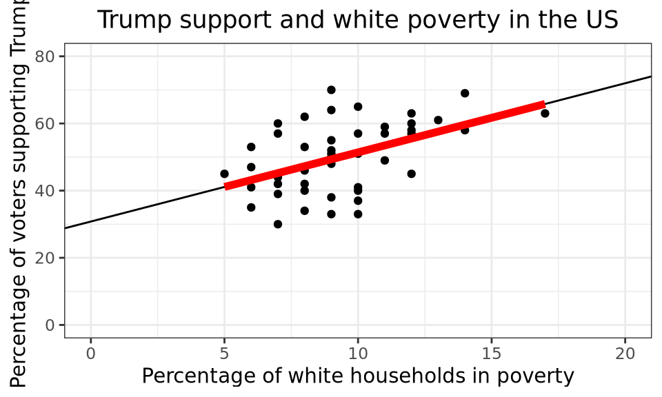
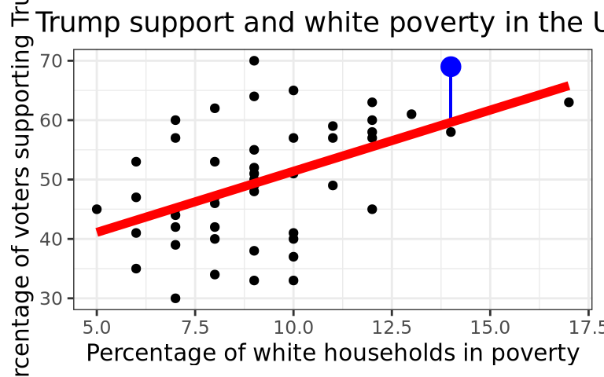

library(dplyr)
library(ggplot2)
library(readr)
library(moderndive)Problem Set 04: Linear Regression
Background
For this problem set you will first run through an example of a simple linear regression, answering a few questions on the way. Then you will work through a regression analysis independently. Knit this file…and you can read through all the instructions.
We will look at some demographic data from the fivethirtyeight package recorded for 48 voting areas in the US states just after the 2016 presidential election. We will investigate what variables within those regions might be tied to the percentage of US voters that supported Donald Trump, and in turn, which variables might be useful to predict Trump support in other regions (i.e. to a wider US population).
Setup
Load Packages
We will read the data in with the readr package, explore the data using the dplyr package and visualize the data using the ggplot2 package. The moderndive package includes some nice functions to show regression model outputs.
The Data
The following uses the function read_csv() to read a *.CSV file of the data from where it is published on the web.
Take a moment to look at the data in the viewer or by using glimpse().
glimpse(trump)Rows: 48
Columns: 4
$ hs_ed <dbl> 90.4, 80.6, 91.0, 89.0, 89.0, 84.7, 89.7, 86.4, 82.8, 84…
$ poverty <dbl> 7, 9, 10, 8, 6, 10, 9, 7, 10, 8, 6, 10, 8, 7, 7, 12, 5, …
$ non_white <dbl> 81, 61, 6, 27, 50, 42, 31, 37, 62, 28, 30, 26, 37, 44, 3…
$ trump_support <dbl> 30, 33, 33, 34, 35, 37, 38, 39, 40, 40, 41, 41, 42, 42, …The explanatory variables include:
hs_ed- the percentage of the adults in the region with a high school education.poverty- the percentage of the “white” households in the region in poverty.non_white- the percentage of humans in a region that identify as a person of color.
The outcome variable trump_support is the percentage of votes for Trump in 2016 in each region.
Observe that all percentages are expressed as values between 0 and 100, and not 0 and 1.
An Example/Demo
Visualization
We will start by investigating the relationship between white poverty levels and support for Trump.
We’ll do this by creating a scatterplot with trump_support as the outcome variable on the y-axis and poverty as the explanatory variable on the x-axis. Note the use of the geom_smooth() function, that tells R to add a regression line. While the points do scatter/vary around the blue regression line, of all possible lines we can draw in this point of clouds, the blue line is the “best-fitting” line in that in minimizes the sum of the squared residuals.
The Correlation Coefficient (r)
We can numerically quantify the strength of the linear relationship between the two variables with the correlation coefficient. The following tells R to summarize() the correlation coefficient between the numerical variables poverty and trump_support. Note that the correlation coefficient only exists for pairs of numerical variables.
Running a Linear Regression Model
In R we can fit a linear regression model (a regression line), like so:
Note
poverty_mod <- lm(trump_support ~ poverty, data = trump)Note that:
- the function
lm()is short for “linear model” - the first argument is a formula in the form
y ~ xor in other wordsoutcome variable ~ explantory variable.
- the second argument is the data frame in which the outcome and explanatory variables can be found.
- we SAVED THE MODEL RESULTS as an object called
poverty_mod
This object poverty_mod contains all of the information we need about the linear model that was just fit and we’ll be accessing this information again later.
Get the Regression Table
The get_regression_table() function from the moderndive package will output a regression table. Let’s focus on the value in the second column: an estimate for 1) an intercept, and 2) a slope for the poverty variable. We’ll revisit what the other columns mean in a future problem set.
We can interpret the intercept and poverty slope like so:
- When the poverty level is 0, the predicted average Trump support is 30.81%.
- For every increase in poverty level of 1 percentage point, there is an associated increase in Trump support of 2.06 percentage points.
Revisiting the Figure 1, we can see that the best-fit line hits the y axis at 30.81 (if we extend it). This is the intercept…the y value at which poverty = 0 (note, a value that is not close to the range of values for “percentage of white households in poverty”).

Making Predictions
Based on the R output of our model, the following is our least squares regression line for the linear model:
\[\widehat{\text{trump\_support}} = 30.8064 + 2.0591 \times \text{poverty}\]
We can use the least squares regression line of the trump_support versus poverty relationship (See Figure 2) to visually make predictions. For instance at 15% white poverty, the line shows a value of just over 60% Trump support.
To get a more accurate prediction, we could actually plug 15% into the regression equation like so:
Residuals
Recall that model residuals are the difference between the observed values in your data set and the values predicted by the line:
\[\text{residual} = y - \hat{y}\]
For instance, below, one data point is highlighted in blue…the residual is the difference between the y value of the data point (here 69), and the y value predicted by the line (roughly 59). Here the residual is roughly 10 (\(69 - 59 = 10\)). The regression equation has under-estimated Trump support, compared to this data point.

The function get_regression_points() provides the fitted also known as predicted value for every data point, and the residual for every data point. The first row in the output is the first data point…you see that Trump support was 30%, white poverty was 7%, the regression equation predicted 45.22% Trump support, and the residual was \(-15.22 = (30 - 45.22)\).
Put your Skills to Practice Independently!
Use the same trump data set for the following questions:
Turning in Your Work
You will need to make sure you commit and push all of your changes to the github education repository where you obtained the lab.
Tip
- Make sure you render a final copy with all your changes and work.
- Look at your final html file to make sure it contains the work you expect and is formatted properly.
Logging out of the Server
There are many statistics classes and students using the Server. To keep the server running as fast as possible, it is best to sign out when you are done. To do so, follow all the same steps for closing Quarto document:
Tip
- Save all your work.
- Click on the orange button in the far right corner of the screen to quit
R - Choose don’t save for the Workspace image
- When the browser refreshes, you can click on the sign out next to your name in the top right.
- You are signed out.
sessionInfo()R version 4.2.3 (2023-03-15)
Platform: x86_64-pc-linux-gnu (64-bit)
Running under: Red Hat Enterprise Linux 9.2 (Plow)
Matrix products: default
BLAS/LAPACK: /usr/lib64/libopenblasp-r0.3.21.so
locale:
[1] LC_CTYPE=en_US.UTF-8 LC_NUMERIC=C
[3] LC_TIME=en_US.UTF-8 LC_COLLATE=en_US.UTF-8
[5] LC_MONETARY=en_US.UTF-8 LC_MESSAGES=en_US.UTF-8
[7] LC_PAPER=en_US.UTF-8 LC_NAME=C
[9] LC_ADDRESS=C LC_TELEPHONE=C
[11] LC_MEASUREMENT=en_US.UTF-8 LC_IDENTIFICATION=C
attached base packages:
[1] stats graphics grDevices utils datasets methods base
other attached packages:
[1] moderndive_0.5.5 readr_2.1.4 ggplot2_3.4.3 dplyr_1.1.3
[5] knitr_1.43
loaded via a namespace (and not attached):
[1] tidyselect_1.2.0 xfun_0.40 janitor_2.2.0
[4] purrr_1.0.2 lattice_0.21-8 operator.tools_1.6.3
[7] splines_4.2.2 snakecase_0.11.1 colorspace_2.1-0
[10] vctrs_0.6.3 generics_0.1.3 htmltools_0.5.6
[13] yaml_2.3.7 mgcv_1.9-0 utf8_1.2.3
[16] rlang_1.1.1 pillar_1.9.0 glue_1.6.2
[19] withr_2.5.0 infer_1.0.5 bit64_4.0.5
[22] lifecycle_1.0.3 stringr_1.5.0 munsell_0.5.0
[25] gtable_0.3.4 htmlwidgets_1.6.2 evaluate_0.21
[28] labeling_0.4.3 tzdb_0.4.0 fastmap_1.1.1
[31] parallel_4.2.2 fansi_1.0.4 broom_1.0.5
[34] scales_1.2.1 backports_1.4.1 vroom_1.6.3
[37] jsonlite_1.8.7 farver_2.1.1 bit_4.0.5
[40] hms_1.1.3 digest_0.6.33 stringi_1.7.12
[43] formula.tools_1.7.1 grid_4.2.2 cli_3.6.1
[46] tools_4.2.2 magrittr_2.0.3 tibble_3.2.1
[49] crayon_1.5.2 tidyr_1.3.0 pkgconfig_2.0.3
[52] ellipsis_0.3.2 Matrix_1.6-1 lubridate_1.9.2
[55] timechange_0.2.0 rmarkdown_2.24 rstudioapi_0.15.0
[58] R6_2.5.1 nlme_3.1-163 compiler_4.2.2